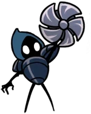

-
Cloth

Descrição
Uma cigarra guerreira. Indo a Hallownest provar sua coragem derrotando criaturas. Ela é motivada pela ideia de morrer em batalha épica e se reunir à sua falecida Nola.
-
Cornifer

Descrição
Cornifer é um NPC em Hollow Knight. Ele é um cartógrafo que está trabalhando em mapear toda Hallownest.
-
Hornet
Descrição
Hornet é a misteriosa princesa-protetora das ruínas de Hallownest, uma personagem importante de Hollow Knight e protagonista de Hollow Knight: Silksong.
-
Sr.Cogumelo
Descrição
Senhor Cogumelo é um NPC cogumelo falante, encontrado em Hallownest depois que todos os três Sonhadores estiverem mortos.
-
Quirrel
Descrição
Quirrel é um curioso e otimista explorador, fascinado pelos mitos de Hallownest. Por mais ele seja apenas um observador, ele está ciente dos perigos do reino.
-
Tiso
Descrição
Tiso Tiso é um aventureiro à procura do Coliseu dos Tolos pelo seu desafio. Ele luta usando seu escudo. O qual ele clama esconder uma "surpresa mortal"
-
Zote o Poderoso

Descrição
Zote o Poderoso é um NPC em Hollow Knight. É um viajante de fora de Hallownest que veio para cumprir uma promessa.